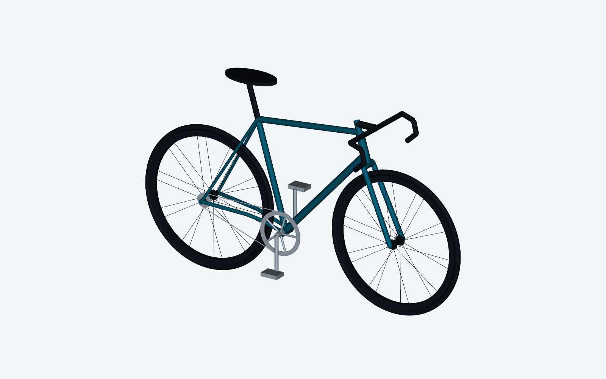

COMPLETE / EXCHANGE
Map the geometry
Translated supplied road-bike targets into a medium-size coordinate layout. The bottom bracket is the shared origin; major points are exported to DXF and STEP skeleton files.
Parameter source ↗REVISION A / 07 NOV 2026 / CONCEPT STUDY
A 700c road-bike layout, built from a shared coordinate model and checked in the open.
Enter the engineering journal ↓
01 / THE BRIEF
The starting brief called for a responsive 700c road-bike layout. This revision turns those targets into a coherent frame skeleton, an exchange-CAD assembly and a record of what has, and has not, been checked.
The design question
Can the baseline geometry meet the stated envelope and nominal tire clearances while staying traceable back to one parameter set?
02 / MASTER GEOMETRY
The bottom bracket is the origin. X points forward, Y left, and Z up. The same points drive the skeleton, tube schedule and exchange model.
Side-view construction sketch, redrawn from master points. Use the dimensioned drawing for the complete concept layout.
03 / ASSEMBLY EXPLORER
An interactive schematic derived from project coordinates. It is not the STEP assembly itself.
04 / VISUAL STUDY
This AI-generated scene is illustrative only. It does not document fabrication or work performed on this project.

05 / NOMINAL CLEARANCE CHECKS
Distances below come from boundary-representation checks on the concept solids. “Pass” means this nominal model cleared its stated target; it is not evidence of production clearance or bicycle safety.
06 / ENGINEERING JOURNEY
A record of work in this revision, and the engineering gates that remain before anything could be built.
Translated supplied road-bike targets into a medium-size coordinate layout. The bottom bracket is the shared origin; major points are exported to DXF and STEP skeleton files.
Parameter source ↗Generated a welded round-tube frame concept and static assembly of simplified reference envelopes. STEP components were re-imported and checked for valid solids.
Component register ↗Recorded tire, chainring and crank-envelope distances, plus discrete steering samples. These checks cover nominal geometry only.
Clearance table ↗Select supplier wheels, tires, hubs, headset, bottom bracket and brakes. Rebuild detailed joints, establish rider fit, and repeat checks with actual components.
OPEN DESIGN WORKDefine material and weld procedures, tolerances and load cases. Complete structural review and applicable physical testing before any manufacturing release.
NOT FOR MANUFACTURE07 / PROJECT FILES
Source data, drawings and exchange geometry are versioned together. Binary CAD and drawing files are stored with Git LFS.
Read before reuse. The STEP assembly is a static concept, not a qualified bicycle. Supplier components, native SolidWorks features and mates, rider fit, structural analysis and production drawings remain pending.